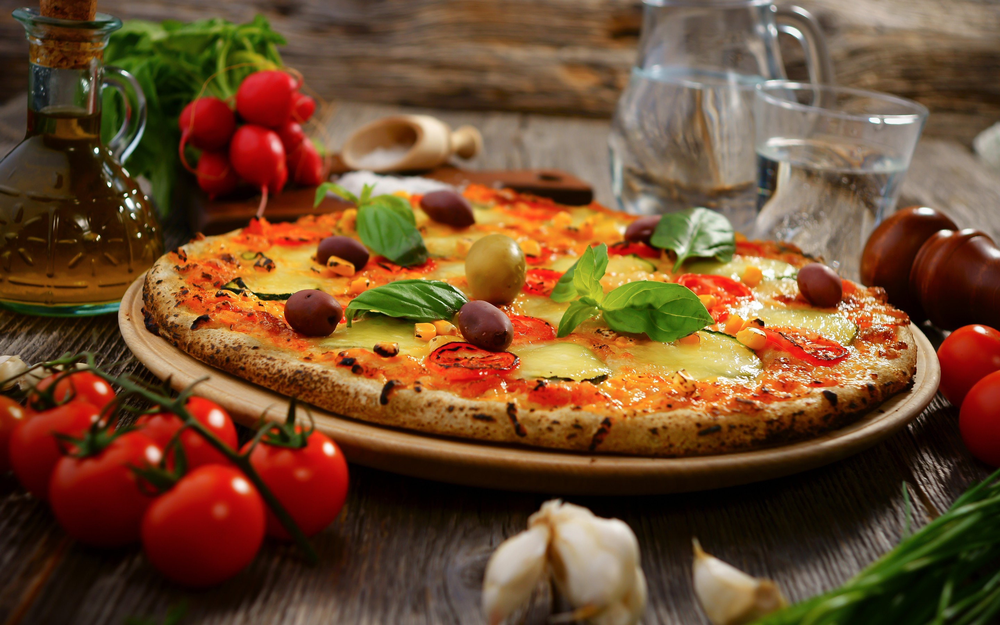

Pizza
- 30Minutes
- 8Ingridients
- 4serve
It's easier than you think to make restaurant-quality French toast in the comfort of your own kitchen – you just need a skillet, a few staple ingredients, and a good recipe. That's where we come in!

Burger
- 24Minutes
- 7Ingridients
- 1serve
This is a great recipe that I found in my Grandma's recipe book. Judging from the weathered look of this recipe card, this was a family favorite. A very healthy AND flavorful burger with a little extra crunch. words to mak it look bigger.

Pasta
- 32Minutes
- 9Ingridients
- 2serve
Easy and quick pasta dish! Italian dish available in every Italian food stall around Italy. Very easy and fast to make, for lunch or as a side dish. This unfolded omelette with bronzed edges .